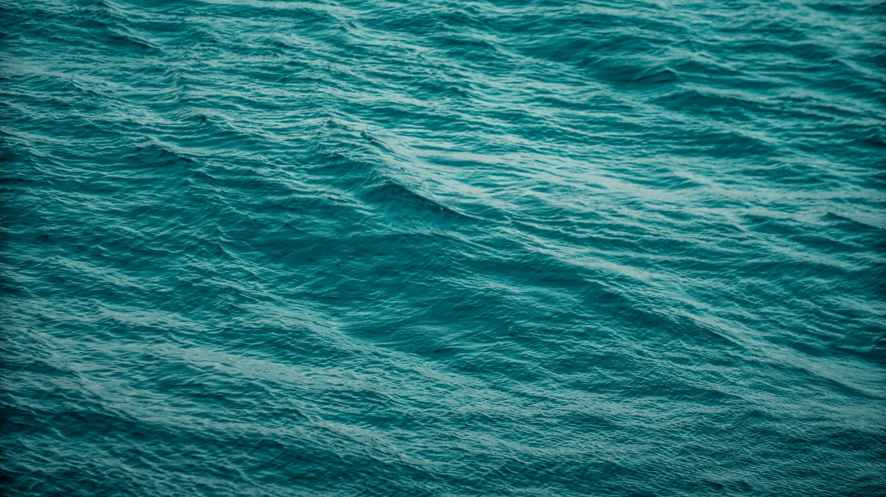
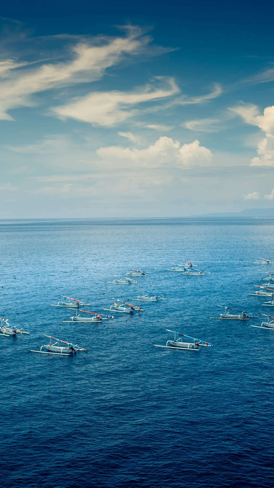
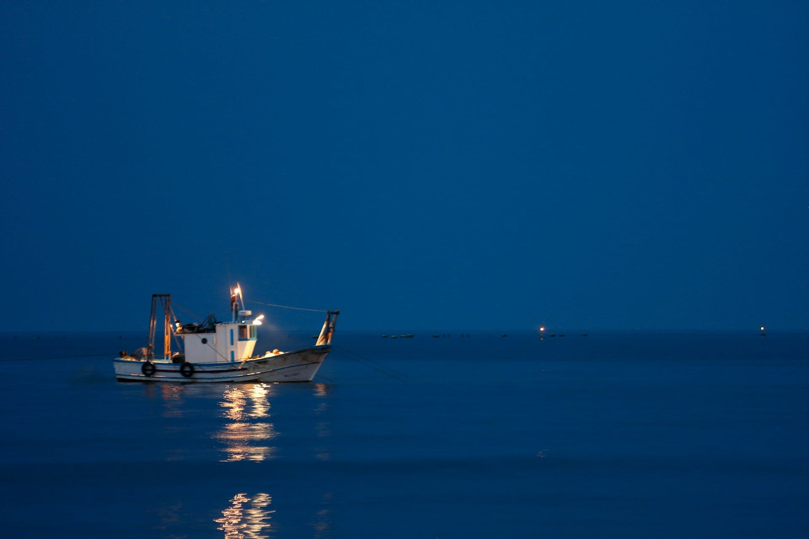

Bahía / flatsBay / flats
Aguas calmas, pesca ligeraCalm waters, light tackle
- Tarpon
- RóbaloSnook
- Bonefish
De los flats de la bahía al borde del Gulf Stream. Qué se pesca, cuándo, y cómo salir bien preparado: una guía honesta, hecha para planear. From the bay flats to the edge of the Gulf Stream. What bites, when, and how to head out prepared: an honest guide, built for planning.
Las temporadas de abajo son ventanas generales, no garantías. Los peces son organismos vivos: se mueven según el agua, la temperatura y el clima, y un gran día puede caer fuera de su mes «pico». Úsalo para planear, no como promesa. Para tallas, vedas y límites de captura vigentes —que sí cambian por ley— consulta siempre la fuente oficial antes de salir. The seasons below are general windows, not guarantees. Fish are living creatures: they move with the water, temperature and weather, and a great day can fall outside its "peak" month. Use it to plan, not as a promise. For current sizes, closures and bag limits —which do change by law— always check the official source before heading out.
Ventanas pico aproximadas para Miami y Biscayne Bay. Léelo junto al aviso de arriba.Approximate peak windows for Miami and Biscayne Bay. Read it alongside the note above.
Las salidas más accesibles, cerca de la costa.The most accessible trips, close to shore.

Donde el agua se hace azul profundo: mar abierto de día y pesca nocturna.Where the water turns deep blue: open ocean by day and night fishing.


Depende de cómo salgas. Lo esencial, con los enlaces oficiales.It depends on how you go out. The essentials, with official links.
Las tallas, vedas y límites cambian por especie y temporada, y los fija FWC. Antes de salir, consúltalos en la fuente oficial: Regulaciones recreativas de agua salada de FWC y la app Fish Rules (regla vigente por especie y ubicación). En charter, tu capitán te guía sobre qué se queda y qué se suelta. Sizes, closures and limits change by species and season, and are set by FWC. Before heading out, check them at the official source: FWC saltwater recreational regulations and the Fish Rules app (current rule by species and location). On a charter, your captain guides you on what to keep and what to release.
Charters de pesca, renta de botes y jet ski: suma tu negocio al directorio bilingüe de Miami y aparece frente a quienes buscan salir al agua. Fishing charters, boat rentals and jet ski: add your business to Miami's bilingual directory and show up in front of people looking to get on the water.